own()
Own the whole system
Data model, API, interface, release and the server it runs on. Fewer hand-offs means fewer surprises in production.
Seen in: Tender Management, INFRA, HS Investment
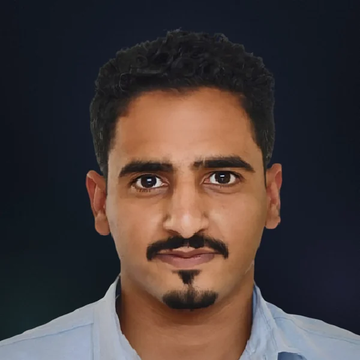
Senior Full-Stack Engineer & Technical Lead
I'm Ali Abu-Hatem. I design, build and run production systems end to end: Django and Next.js platforms, Flutter apps, local AI tools, and the servers and networks they live on.
Where I started: networks and servers for 100+ concurrent users.
~/ali/README.md
I started in networks, keeping infrastructure online for 100+ concurrent users. That habit stayed with me: I build software with the server, the network and the person on call in mind.
Today I am the technical owner of HS Group's software estate across three companies. I decide the architecture, write a large share of the code, review the rest, and keep it running. In parallel, my practice AWAM SOFT ships mobile and web products for international clients, solo, from requirements to release.
// about.tsexport const ali = { role: "Senior Full-Stack Engineer & Technical Lead", based: "New Cairo, Egypt", experience: "7+ years", owns: ["architecture", "backend", "frontend", "mobile", "infra"], stack: { backend: ["Python", "Django", "DRF", "PostgreSQL"], web: ["Next.js", "React", "TypeScript", "Tailwind"], mobile: ["Flutter", "Dart", "Riverpod", "BLoC", "Firebase"], ai: ["Ollama", "Gemini"], infra: ["Vercel", "Windows Server", "Active Directory"], }, shipped: 7, languages: ["Arabic", "English"], openTo: ["remote", "relocation"],} as const;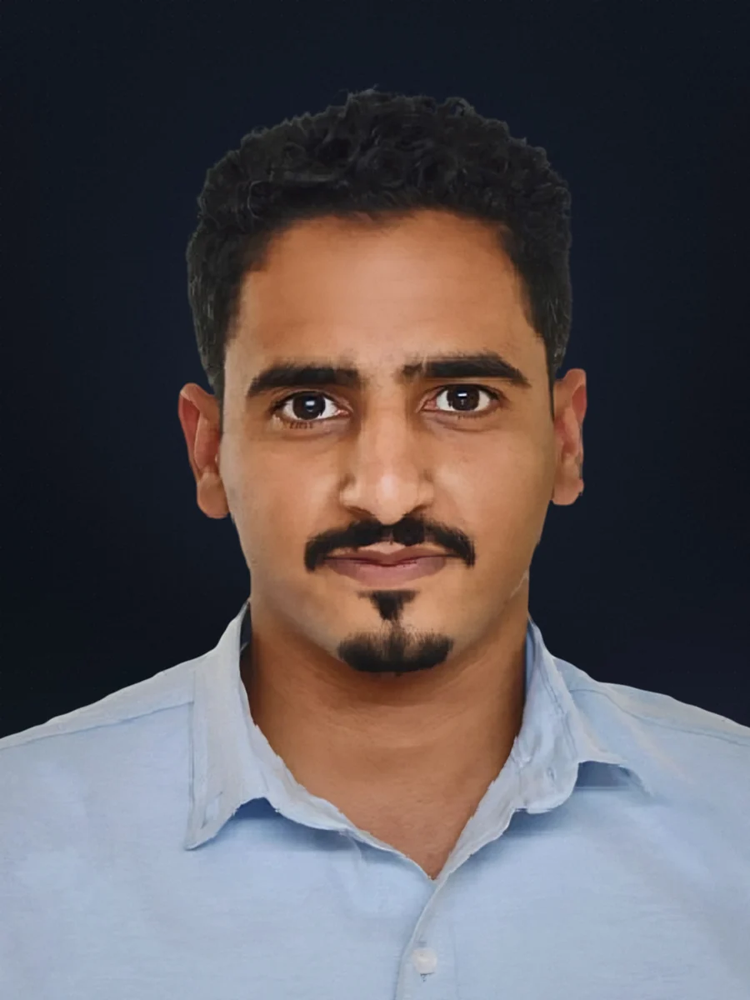
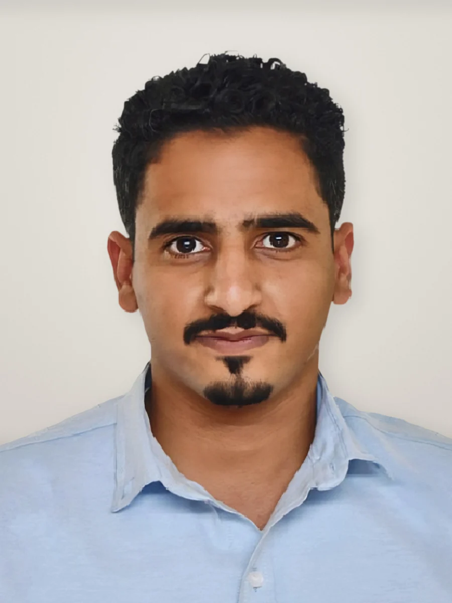
~/ali/principles.ts
own()
Data model, API, interface, release and the server it runs on. Fewer hand-offs means fewer surprises in production.
Seen in: Tender Management, INFRA, HS Investment
constrain()
Flaky networks, simultaneous bids, Arabic RTL and private data shape the architecture from day one, not in the last sprint.
Seen in: Go Green Power, Auction Platform, AI Meeting Minutes
handover()
If the people running the business cannot update it without me, it is not finished.
Seen in: 1,137 editable fields on INFRA; HS Investment admin
truth()
An honest empty state beats invented case studies, and every number here comes from a live system, a repository or a written record.
Seen in: ConsultX, this portfolio
~/ali/work
Production work across a holding group and my own practice. Client repositories stay private under NDA; I am happy to walk through any of them live.
A cinematic public site and the admin console that runs it, for an investment group active in five countries.
Headless architecture: Django 5.2 models behind a read-only Django REST Framework API, consumed by a Next.js 16 front end with Framer Motion and a static fallback for prefers-reduced-motion. The Unfold-based admin adds one-click creation for every content type, image upload from the editor's computer, an enquiry inbox and a recent-actions log.
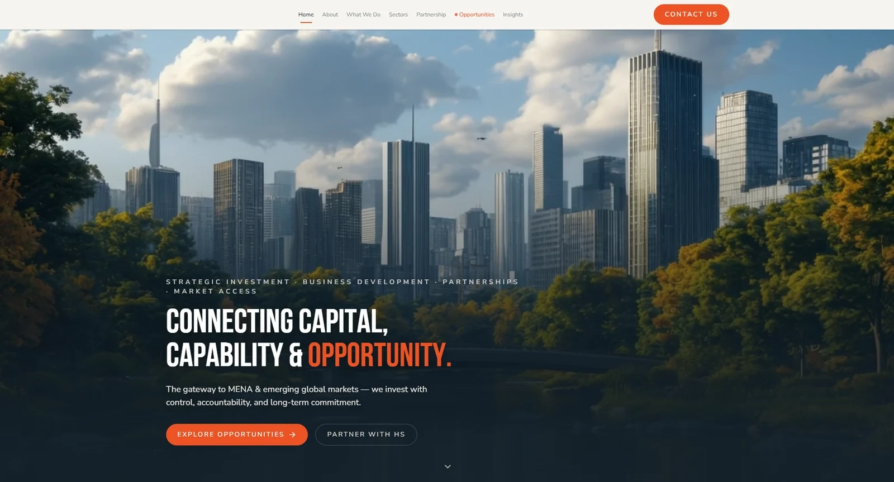
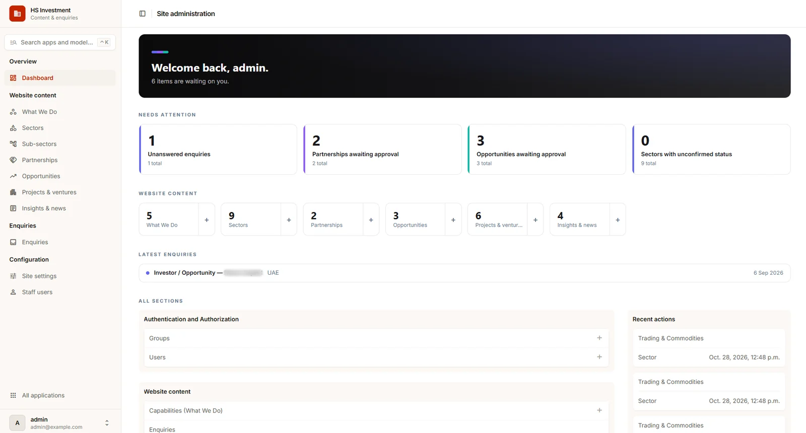
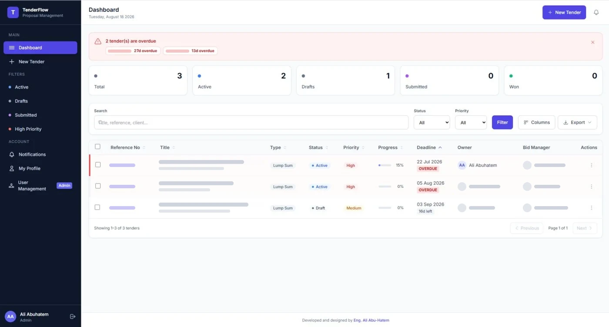
One source of truth for tenders across Sales, Technical, Finance and Customer teams.
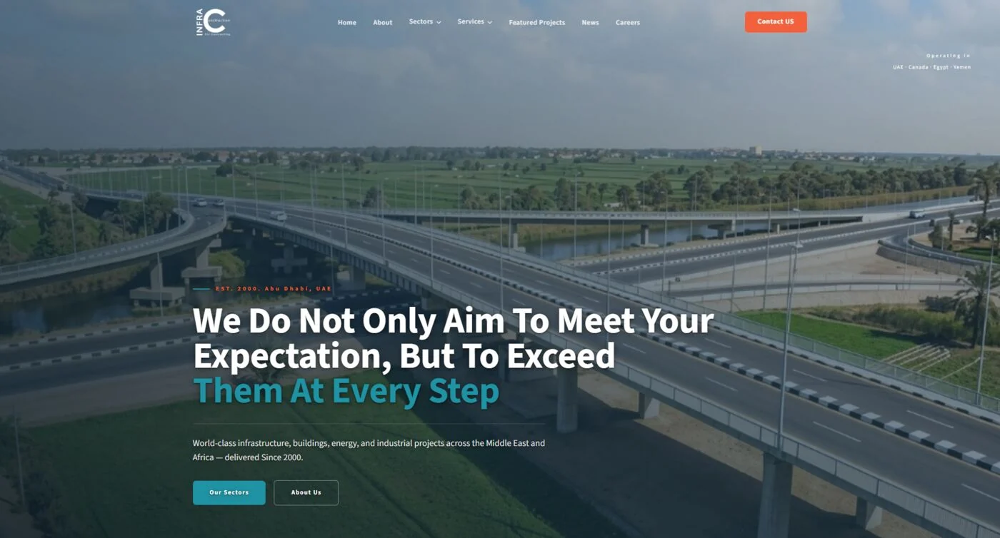
A 12-route corporate site with a CMS that non-technical staff run themselves.
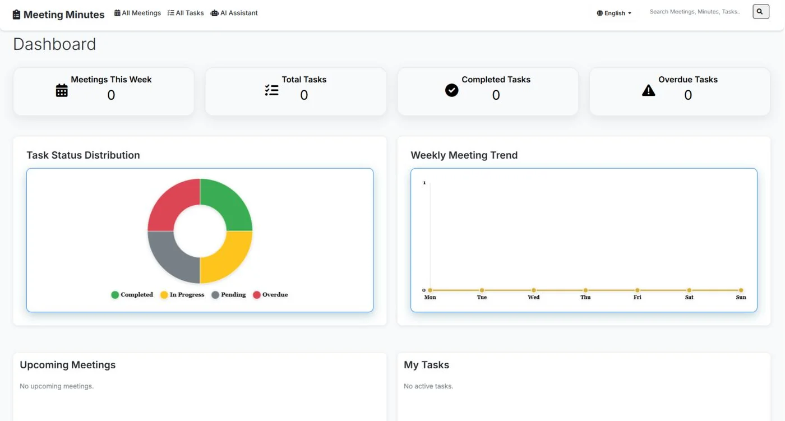
Raw meeting minutes become assigned, tracked tasks, without data leaving the building.
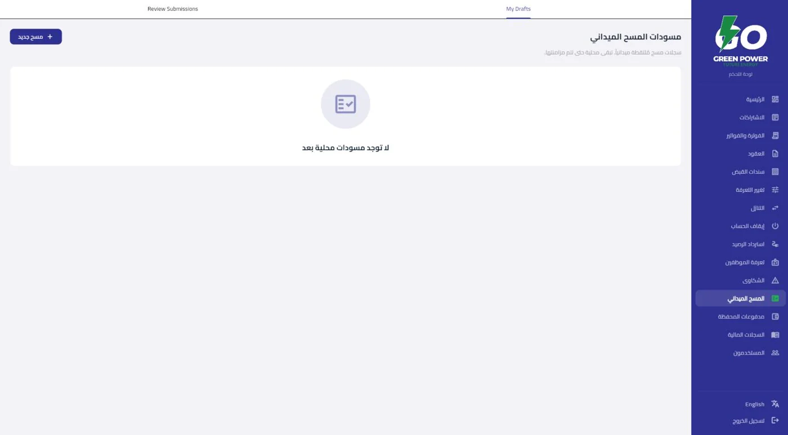
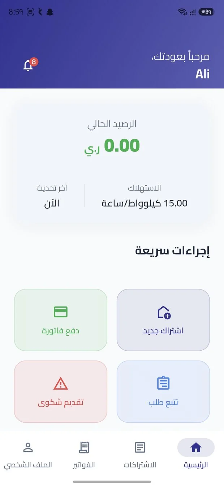
A customer app and a 14-module back office for an electricity subscription provider.
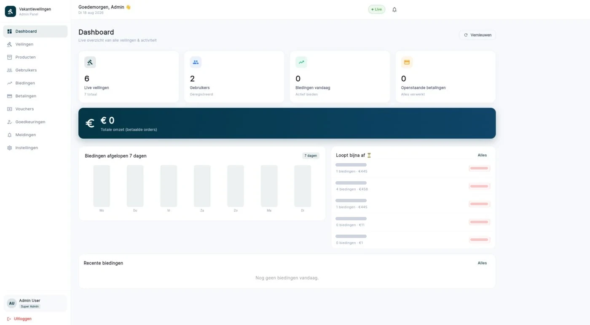
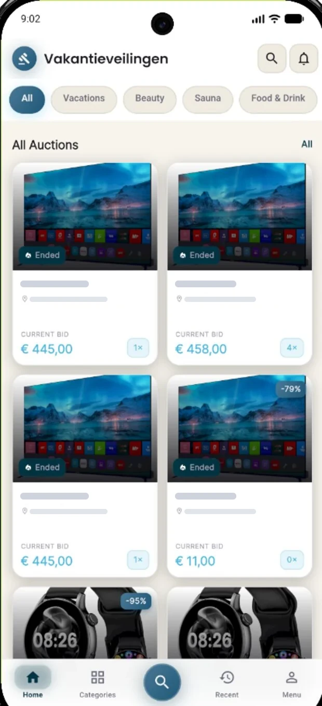
Live bidding across four categories where two buyers can never win the same lot.
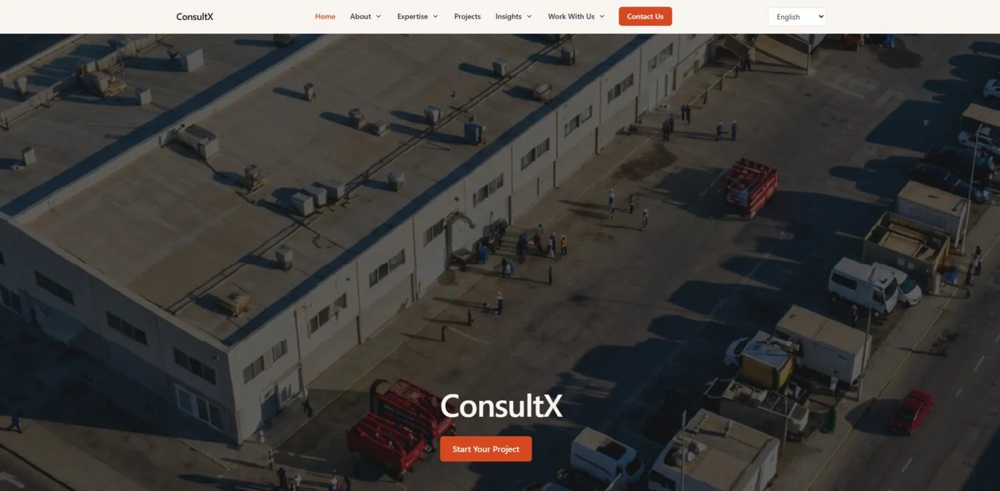
A credible bilingual presence for a newly founded engineering consultancy.
~/ali/architecture
The tools I use in production, from the network up to the interface, and the systems where each one runs today.
~/ali $ git log --graph --all
a3f9e21(HEAD -> main)feat(hs-investment):
headless platform: Next.js 16 + Django REST + admin approvals
status: in build
7c41d0bfeat(ai):
local-first minutes to tasks (Ollama, Gemini fallback)
status: active use
e8b27aafeat(infra):
12-route site + custom CMS, 975 commits
status: live
41d6f0cfeat(tender):
multi-department tender workflow on Django + PostgreSQL
status: active use
5be8c13(awam-soft)feat(auction):
atomic bids, NL/EN/AR
status: final testing
c90e9f2feat(go-green-power):
14-module back office + offline-friendly app
status: live
2fa4b8djoin(hs-group):
Technical Lead, owner of the group's software estate
Apr 2024
0c2b1d5init(awam-soft):
independent practice opens: production Flutter and web apps, solo
2023
6a1e4f9role(prima):
Senior Network Engineer: vulnerabilities -30%, downtime -20%
2021
9d7c3b2build(education):
B.Tech Computer Network Engineering, GPA 3.7
2020
0000001init:
hello, world
2016
~/ali/terminal
The same profile, for people who prefer a prompt. Type help, press Tab to complete, and use the arrow keys for history.
~/ali $ ./contact.sh
I'm looking for a senior full-stack role, remote or with relocation. Email is the fastest way to reach me; I usually answer within a day.